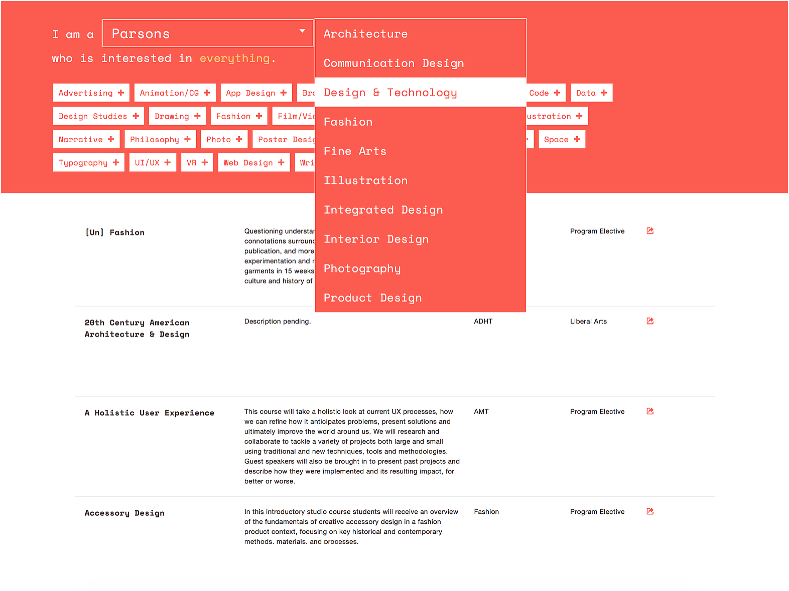

This was a project that I participated in along with two other fellow students. We created an organized webpage of Parsons electives that catered to student's needs.

A universal gripe among Parson students is the poor navigation and accessability of the school's course catalog. We decided to challenge and solve this design problem by re-designing how the course catalog would be layed out. We focused on electives because those were the primary conerns acording to a survery of students.